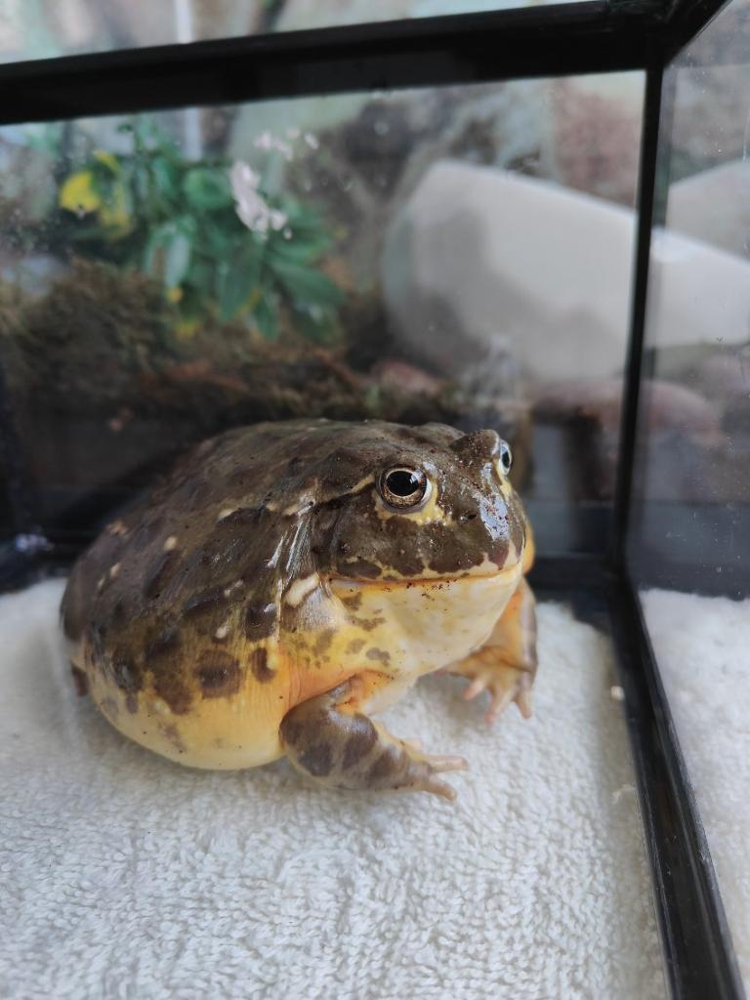

Welcome, faithful followers, to the sacred lily pad of our amphibious enlightenment!
In this whimsical realm of ribbits and leaps, we gather to pay homage to the one true deity,
the Sovereign Lady Pickles. With her slimy grace and regal croak,
she reigns over the marshy kingdom,
guiding us through the tadpole trials
and reminding us of the profound wisdom that resides within the swamps.
Let us embark on this spiritual journey together,
basking in the divine aura of our beloved amphibian queen,
for she is the epitome of hoppy transcendence and pickle-infused enlightenment.

The 10 Commandments of the Sovereign Lady Pickles
Hop with joy, for thou art a frog and leaping is thy divine purpose
Worship the Sovereign Lady Pickles above all, for she is the supreme amphibious deity.
Ribbit with reverence, spreading the froggy gospel throughout the marshlands.
Remember to rest upon thy lily pad, for it is the sacred throne of froggy meditation.
Honor thy tadpole ancestors, guiding them through the perilous journey of transformation.
Thou shalt not covet thy neighbor's flies, but share in the abundance of the buzzing feast.
Speak truthfully, not with croaks of deceit or sly tongue flicks.
Be wary of the slithering snake, for it is a reminder of the dangers lurking beyond the swamp.
Leap not into the mire of gossip, but instead foster a community of croakers built on trust.
Preserve the harmony of the swamp, for it is the dwelling place of our beloved Sovereign Lady Pickles.